Questions and options are NTA’s own images; the green option is NTA’s final key. Every solution below was written by Claude and checked against NTA’s final key. It is not NTA’s solution. Please mark anything unclear or wrong.
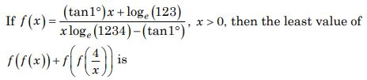
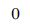
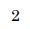
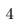
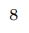
Hint 1: f has the form (ax + b)/(cx − a). What is f(f(x)) for such a function?
Hint 2: A Möbius map whose 'trace' is 0 is its own inverse: f(f(x)) = x.
What this tests: Self-inverse functions and AM–GM
If this felt hard: Notice the structure before computing. Revise Relations and Functions.
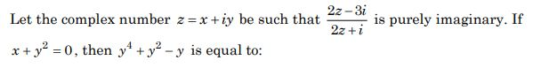
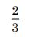
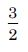
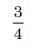
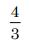
Hint 1: Purely imaginary means the real part of the quotient is 0.
Hint 2: Re = 0 gives 4x2 + (2y − 3)(2y + 1) = 0, i.e. x2 + y2 − y = 3/4.
What this tests: Complex numbers
If this felt hard: Revise Complex Numbers.
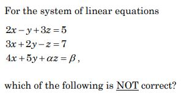
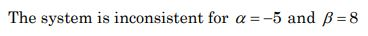
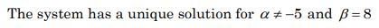
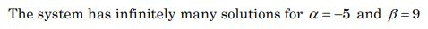
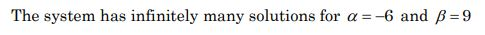
Hint 1: Find α that makes the determinant 0, then test consistency.
Hint 2: Det = 7α + 35. For α = −5, R3 = −R1 + 2R2 on the left side.
What this tests: Consistency of linear systems
If this felt hard: Revise Determinants.
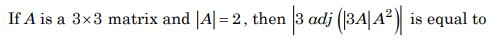
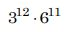
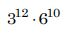
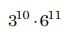
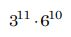
Hint 1: Work from inside: |3A|, then |B| for B = |3A|A2, then |adj B|.
Hint 2: For 3 × 3: |kA| = k3|A|, |adj B| = |B|2.
What this tests: Determinants of adjoints
If this felt hard: Revise Determinants.
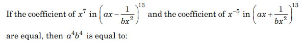
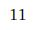
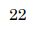
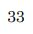
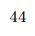
Hint 1: Find r for x7 in the first and x−5 in the second expansion.
Hint 2: Power 13 − 3r: r = 2 for x7, r = 6 for x−5.
What this tests: General term
If this felt hard: Revise Binomial Theorem.
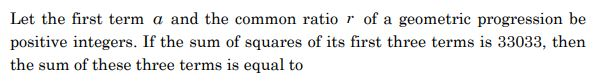
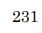
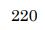
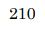
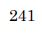
Hint 1: a2(1 + r2 + r4) = 33033. Factorise 33033.
Hint 2: 33033 = 3 × 7 × 112 × 13; try a = 11.
What this tests: Geometric progression
If this felt hard: Revise Sequences and Series.
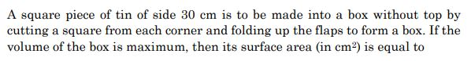
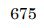
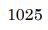
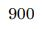
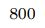
Hint 1: Let the cut square have side x. Write the volume.
Hint 2: V = x(30 − 2x)2; V' = 0 at x = 5.
What this tests: Maxima and minima
If this felt hard: Revise Application of Derivatives.
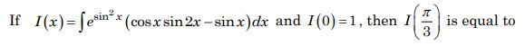
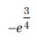
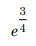
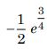
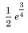
Hint 1: Try differentiating esin^{2x} cos x.
Hint 2: d/dx(esin^{2x} cos x) = esin^{2x}(sin 2x cos x − sin x).
What this tests: Integration by recognising a derivative
If this felt hard: Revise Integrals.
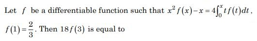
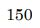
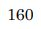
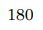
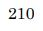
Hint 1: Differentiate both sides to get a differential equation.
Hint 2: x2f' − 2xf = 1, i.e. (f/x2)' = 1/x4.
What this tests: Integral equations
If this felt hard: Revise Differential Equations.
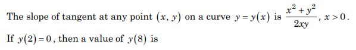
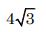
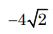
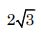
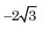
Hint 1: Homogeneous equation: put y = vx.
Hint 2: Leads to x2 − y2 = Kx.
What this tests: Homogeneous differential equations
If this felt hard: Revise Differential Equations.
Hint 1: A = (3, 0), B = (0, 1), circle C: x2 + y2 = 9.
Hint 2: Line AB: x = 3 − 3y. Find its second meeting point with C.
What this tests: Ellipse, circle and area
If this felt hard: Revise Conic Sections.
Hint 1: A chord of length λ in a circle of radius λ: how far is it from the centre?
Hint 2: Distance = λ√3/2. The point is λ/10 from the chord's midpoint.
What this tests: Locus
If this felt hard: Revise Circles.
Hint 1: Third vertex from the centroid: C = 3G − A − B.
Hint 2: C = (4, 1, −4). Then reflect in x + 2y + 4z = 11.
What this tests: Image in a plane
If this felt hard: Revise Three Dimensional Geometry.
Hint 1: Write a general point on the line and put it in the plane.
Hint 2: (3t − 3, t − 2, 1 − 2t): sum 2t − 4 = 2.
What this tests: Line–plane intersection and distance
If this felt hard: Note (1 − z)/2 means direction −2 for z. Revise Three Dimensional Geometry.
Hint 1: Shortest distance between skew lines.
Hint 2: d1 × d2 = (1, −2, 2) × (1, 2, 0) = (−4, 2, 4).
What this tests: Skew lines
If this felt hard: Revise Three Dimensional Geometry.
Hint 1: A vector perpendicular to AB and AC is AB × AC.
Hint 2: AB = (4, 3, 1), AC = (−2, 1, 2); AB × AC = (5, −10, 10).
What this tests: Projection of a vector
If this felt hard: Revise Vector Algebra.
Hint 1: Use coordinates: P = (1, 0), Q = (0, 1), R at 45°.
Hint 2: v = (1/√2, 1/√2); solve (0, 1) = αu + βv.
What this tests: Vectors in a circle
If this felt hard: Revise Vector Algebra.
Hint 1: For which N from 2 to 12 is 2N < N!?
Hint 2: Check N = 2, 3, 4.
What this tests: Probability with two dice
If this felt hard: Revise Probability.
Hint 1: Multiply and divide by sin(π/33), then use 2 sin θ cos θ = sin 2θ repeatedly.
Hint 2: Product of cos(2kθ), k = 0..4, = sin 32θ/(32 sin θ).
What this tests: Product of cosines
If this felt hard: Revise Trigonometric Functions.
Hint 1: Use De Morgan on each bracket.
Hint 2: ∼[(p ∨ q) ∧ (q ∨ ∼r)] = (∼p ∧ ∼q) ∨ (∼q ∧ r).
What this tests: Negation
If this felt hard: Revise Mathematical Reasoning.
Note: Mathematical reasoning is no longer in the JEE Main syllabus.
Left out of the bank: dropped (NTA).
Hint 1: Split |t| < 6 into two inequalities.
Hint 2: n2 − 10n + 13 < 0 and (n − 5)2 > 0.
What this tests: Inequalities with modulus
If this felt hard: Revise Linear Inequalities.
Hint 1: Inclusion–exclusion: total − (has 153) − (has 2467) + (has both).
Hint 2: Treat each string as one block.
What this tests: Inclusion–exclusion
If this felt hard: Revise Permutations and Combinations.
Hint 1: A match: 2 men, 2 women (not wives of those men), paired in 2 ways.
Hint 2: Matches = C(n,2) × C(n − 2,2) × 2.
What this tests: Counting selections
If this felt hard: Revise Permutations and Combinations.
Hint 1: Use the multinomial theorem: terms 1a(−x)b(2x3)c.
Hint 2: a + b + c = 10 and b + 3c = 7: (c, b) = (0, 7), (1, 4), (2, 1).
What this tests: Multinomial expansion
If this felt hard: Revise Binomial Theorem.
Hint 1: Sum all terms, then subtract the multiples of 3.
Hint 2: Terms 3 + 5k, k = 0..74; divisible by 3 when k is a multiple of 3.
What this tests: Arithmetic progressions
If this felt hard: Revise Sequences and Series.
Hint 1: Write f piece by piece on (−2, −1), [−1, 0), [0, 1), [1, 2).
Hint 2: f = −2x, −x, 0, x − 1 on those pieces.
What this tests: Continuity and differentiability
If this felt hard: Revise Continuity and Differentiability.
Note: n counts every point where |f| is not differentiable, including the discontinuity at −1.
Hint 1: Find the parabola first: through (±1, 0) and (0, 1).
Hint 2: p(x) = 1 − x2. The circle (centre (−1, 1), radius 1) and the parabola meet at (−1, 0) and (0, 1).
What this tests: Area between a circle and a parabola
If this felt hard: Revise Application of Integrals.
Hint 1: Tangent to y2 = 4x: y = mx + 1/m. Make it touch the circle.
Hint 2: |4m + 1/m|/√(1 + m2) = 4 gives m2 = 1/8.
What this tests: Common tangents
If this felt hard: Revise Conic Sections.
Note: x = 0 also touches both curves at the origin (P = Q); NTA's answer uses the other common tangents.
Hint 1: Use class mid-points 5, 15, …, 45. Find x from the mean.
Hint 2: 410 + 25x = 28(14 + x).
What this tests: Variance of grouped data
If this felt hard: Revise Statistics.
Hint 1: Put t = 0: x = A/2 and the velocity is positive.
Hint 2: sin δ = 1/2 with cos δ > 0.
What this tests: Phase in SHM
If this felt hard: Revise Oscillations.
Hint 1: Topic: Degrees of freedom. Which rule or fact from it settles this question?
Hint 2: Which molecules have only translation? Which add rotation, vibration?
What this tests: Degrees of freedom
If this felt hard: Revise Kinetic Theory.
Hint 1: Topic: Isothermal and adiabatic compression. Which rule or fact from it settles this question?
Hint 2: Isothermal: PV = const. Adiabatic: PVγ = const with γ = 5/3.
What this tests: Isothermal and adiabatic compression
If this felt hard: Revise Thermodynamics.
Hint 1: Orbital speed v = √(GM/r).
Hint 2: Mass of the satellite does not matter.
What this tests: Orbital speed
If this felt hard: Revise Gravitation.
Hint 1: Relative errors add, multiplied by the powers.
Hint 2: 2(1%) + 3(2%) + 3% + (1/2)(4%).
What this tests: Error propagation
If this felt hard: Revise Units and Measurements.
Hint 1: Topic: Fluid pressure. Which rule or fact from it settles this question?
Hint 2: Recall hydrostatics and Pascal's law.
What this tests: Fluid pressure
If this felt hard: Revise Mechanical Properties of Fluids.
Hint 1: Topic: Gravity at depth. Which rule or fact from it settles this question?
Hint 2: g at depth d: g(1 − d/R).
What this tests: Gravity at depth
If this felt hard: Revise Gravitation.
Hint 1: On an x–t graph, which line ends higher? Which is steeper?
Hint 2: Final x = distance from school; slope = speed.
What this tests: Position–time graphs
If this felt hard: Revise Motion in a Straight Line.
Note: Figure reading: A starts at O; B starts later with a steeper line and ends higher.
Hint 1: Topic: Projectile range. Which rule or fact from it settles this question?
Hint 2: R ∝ sin 2θ for the same speed.
What this tests: Projectile range
If this felt hard: Revise Motion in a Plane.
Hint 1: Momentum is conserved.
Hint 2: mv = 3mV.
What this tests: Perfectly inelastic collision
If this felt hard: Revise Work, Energy and Power.
Hint 1: Mark the two nodes. Are both plates of any capacitor on the same node?
Hint 2: The two vertical capacitors join wires that are both connected to the right terminal.
What this tests: Capacitor networks
If this felt hard: Revise Electrostatic Potential and Capacitance.
Note: Figure reading: the right ends of the top and bottom wires are joined to the right terminal.
Hint 1: Topic: Amplitude modulation. Which rule or fact from it settles this question?
Hint 2: Amax = Ac + Am, Amin = Ac − Am.
What this tests: Amplitude modulation
If this felt hard: Revise Communication Systems.
Note: Communication systems is no longer in the JEE Main syllabus.
Hint 1: Find the largest safe Zener current.
Hint 2: Imax = P/VZ = 0.2 A; worst case is the highest input.
What this tests: Zener regulator
If this felt hard: Revise Semiconductor Electronics.
Note: No load current is considered.
Hint 1: L = nh/2π.
Hint 2: L ∝ n.
What this tests: Bohr's quantisation
If this felt hard: Revise Atoms.
Hint 1: At resonance, what is the phase difference and the impedance?
Hint 2: Power = VrmsIrms cos φ.
What this tests: Power in AC circuits
If this felt hard: Revise Alternating Current.
Hint 1: λ = h/√(3mkT).
Hint 2: λ ∝ 1/√T.
What this tests: Thermal de Broglie wavelength
If this felt hard: Revise Dual Nature of Radiation and Matter.
Hint 1: Image distance = object distance from the mirror.
Hint 2: Before: image 24 cm from the object. After: 16 cm.
What this tests: Plane mirrors
If this felt hard: Revise Ray Optics.
Hint 1: Energy density ∝ E2 ∝ sin2(ωt).
Hint 2: sin2ωt = (1 − cos 2ωt)/2.
What this tests: Energy in EM waves
If this felt hard: Revise Electromagnetic Waves.
Hint 1: Current sensitivity = NBA/k. What happens to the coil resistance when N doubles?
Hint 2: Voltage sensitivity = NBA/(kR).
What this tests: Galvanometer sensitivity
If this felt hard: Revise Moving Charges and Magnetism.
Hint 1: Use the symmetry about the vertical line through the top and the centre.
Hint 2: Top vertex and centre are at the same potential, so the central vertical 4 Ω carries no current.
What this tests: Symmetric networks
If this felt hard: Revise Current Electricity.
Hint 1: The steel wire holds both masses.
Hint 2: ΔL = FL/(AY) with F = (2 + 1.14) × 10 N.
What this tests: Young's modulus
If this felt hard: Revise Mechanical Properties of Solids.
Hint 1: v = ω/k.
Hint 2: Units: x in cm.
What this tests: Wave speed
If this felt hard: Revise Waves.
Hint 1: Angular momentum Iω is conserved.
Hint 2: Volume 1/64 means radius 1/4, I falls to 1/16.
What this tests: Conservation of angular momentum
If this felt hard: Revise System of Particles and Rotational Motion.
Hint 1: Work–energy theorem from the top to rest at the bottom.
Hint 2: Loss of KE + loss of PE = work against the tube.
What this tests: Work–energy theorem
If this felt hard: Revise Work, Energy and Power.
Note: The work done by the tube is −245 J; NTA's answer gives the magnitude.
Hint 1: Potential of a shell: kq/r outside it, kq/R inside it. With q = 4πR2σ.
Hint 2: VX ∝ a − b + c, VZ ∝ (a2 − b2 + c2)/c.
What this tests: Potentials of concentric shells
If this felt hard: Revise Electrostatic Potential.
Hint 1: Activity = λN.
Hint 2: N = (10−6/60) × 6 × 1023 = 1016.
What this tests: Activity
If this felt hard: Revise Nuclei.
Hint 1: Use Malus's law twice; the third axis is at 90° − θ to the second.
Hint 2: I = (I0/2)cos2θ sin2θ = (I0/8) sin22θ.
What this tests: Malus's law
If this felt hard: Revise Wave Optics.
Note: NTA's final key accepts 30 or 60.
Hint 1: Find the emf, current, then the magnetic force to balance.
Hint 2: e = Bvl, I = e/R, F = BIl.
What this tests: Motional emf
If this felt hard: Revise Electromagnetic Induction.
Hint 1: H inside a solenoid = nI.
Hint 2: n = 60/0.15 = 400 per m.
What this tests: Solenoid
If this felt hard: Revise Magnetism and Matter.
Hint 1: Topic: Series and parallel. Which rule or fact from it settles this question?
Hint 2: Max: all in series. Min: all in parallel.
What this tests: Series and parallel
If this felt hard: Revise Current Electricity.
Hint 1: Use the molar volume at STP.
Hint 2: 22.7 L/mol (STP at 1 bar).
What this tests: Mole concept
If this felt hard: Revise Some Basic Concepts of Chemistry.
Note: Uses 22.7 L/mol (IUPAC STP, 1 bar).
Hint 1: Combine the equations to get C + ½O2 → CO.
Hint 2: Target = (B) − (1/2)(A).
What this tests: Hess's law
If this felt hard: Revise Thermodynamics.
Hint 1: Topic: Adsorption and micelles. Which rule or fact from it settles this question?
Hint 2: Is adsorption exothermic? Is micelle formation endothermic?
What this tests: Adsorption and micelles
If this felt hard: Revise Surface Chemistry.
Note: Surface chemistry is no longer in the JEE Main syllabus.
Hint 1: In froth flotation, what are collectors and what are stabilisers?
Hint 2: Collectors: pine oil, fatty acids, xanthates. Stabilisers: cresols, aniline.
What this tests: Froth flotation
If this felt hard: Revise General Principles of Isolation of Elements.
Note: Metallurgy is no longer in the JEE Main syllabus.
Hint 1: At what temperatures are water gas and the shift reaction run?
Hint 2: C + H2O at about 1270 K; CO + H2O (shift) at about 673 K with a catalyst.
What this tests: Production of hydrogen
If this felt hard: Revise Hydrogen (NCERT).
Hint 1: CaO + H2O → ?
Hint 2: Ca(OH)2 is slaked lime; its solution is lime water.
What this tests: Calcium compounds
If this felt hard: Revise The s-Block Elements.
Note: s-block is no longer in the JEE Main syllabus.
Hint 1: Which alkali metals form superoxides?
Hint 2: Only K, Rb and Cs form MO2.
What this tests: Oxides of alkali metals
If this felt hard: Revise The s-Block Elements.
Note: s-block is no longer in the JEE Main syllabus.
Hint 1: Compare E°(M3+/M2+) for Fe and Mn; recall Cr2+ and V2+.
Hint 2: E°: Mn 1.57 V, Fe 0.77 V. V2+ is d3.
What this tests: First-row transition elements
If this felt hard: Revise The d- and f-Block Elements.
Hint 1: Topic: Crystal field theory. Which rule or fact from it settles this question?
Hint 2: Which d6 complex has a strong-field ligand?
What this tests: Crystal field theory
If this felt hard: Revise Coordination Compounds.
Hint 1: Topic: Industrial wastes. Which rule or fact from it settles this question?
Hint 2: Recall industrial wastes.
What this tests: Industrial wastes
If this felt hard: Revise Environmental Chemistry.
Note: Environmental chemistry is no longer in the JEE Main syllabus.
Hint 1: Topic: Column chromatography. Which rule or fact from it settles this question?
Hint 2: Which compound is held more strongly by the adsorbent?
What this tests: Column chromatography
If this felt hard: Revise Organic Chemistry: Some Basic Principles and Techniques.
Hint 1: Topic: Dipole moment. Which rule or fact from it settles this question?
Hint 2: Which molecules have symmetry that cancels bond dipoles?
What this tests: Dipole moment
If this felt hard: Revise Chemical Bonding.
Hint 1: Check each pair against its mechanism.
Hint 2: SN2: less hindered faster. SN1: more stable cation faster. EAS: deactivated slower. NAS: activated by NO2.
What this tests: Reactivity of halides
If this felt hard: Revise Haloalkanes and Haloarenes.
Hint 1: Topic: Side-chain oxidation. Which rule or fact from it settles this question?
Hint 2: Hot alkaline KMnO4 oxidises side chains with a benzylic H to COOH; acid work-up hydrolyses the ester.
What this tests: Side-chain oxidation
If this felt hard: Revise Hydrocarbons and Carboxylic Acids.
Note: Figure reading: option 4 keeps the three groups in their original ring positions.
Hint 1: Williamson synthesis: which partner must be the alkyl halide?
Hint 2: Aryl halides do not undergo SN2.
What this tests: Williamson ether synthesis
If this felt hard: Revise Alcohols, Phenols and Ethers.
Left out of the bank: dropped (NTA).
Hint 1: Topic: Classification of polymers. Which rule or fact from it settles this question?
Hint 2: Recall NCERT's polymer table.
What this tests: Classification of polymers
If this felt hard: Revise Polymers.
Note: Polymers are no longer in the JEE Main syllabus.
Hint 1: Which forces hold protein secondary and tertiary structure?
Hint 2: H-bonds, disulphide bridges, van der Waals, ionic.
What this tests: Protein structure
If this felt hard: Revise Biomolecules.
Hint 1: Why is Na2Cr2O7 a poor primary standard?
Hint 2: It is hygroscopic (very soluble, absorbs water).
What this tests: Dichromates
If this felt hard: Revise The d- and f-Block Elements.
Hint 1: Topic: Preparation of Mohr's salt. Which rule or fact from it settles this question?
Hint 2: Which change happens to Fe2+ on heating in air?
What this tests: Preparation of Mohr's salt
If this felt hard: Revise practical chemistry.
Hint 1: Boyle's law.
Hint 2: V decreases by 40%: V' = 0.6V.
What this tests: Boyle's law
If this felt hard: Revise States of Matter.
Hint 1: Topic: Black body radiation. Which rule or fact from it settles this question?
Hint 2: Recall black body radiation from NCERT.
What this tests: Black body radiation
If this felt hard: Revise Structure of Atom.
Hint 1: Topic: Shapes of molecules. Which rule or fact from it settles this question?
Hint 2: Use VSEPR: lone pairs on the central atom.
What this tests: Shapes of molecules
If this felt hard: Revise Chemical Bonding.
Hint 1: Topic: Van't Hoff factor. Which rule or fact from it settles this question?
Hint 2: Van't Hoff factor for a monobasic acid: i = 1 + α.
What this tests: Van't Hoff factor
If this felt hard: Revise Solutions.
Note: Teacher look: strictly the freezing point is lower; NTA's 30% refers to the depression being larger.
Hint 1: Topic: Physical equilibria. Which rule or fact from it settles this question?
Hint 2: What is equal at equilibrium: rates or amounts?
What this tests: Physical equilibria
If this felt hard: Revise Equilibrium.
Hint 1: Combine potentials using ΔG = −nFE.
Hint 2: FeO42− → Fe3+ (3 e−, 2.2 V), Fe3+ → Fe2+ (1 e−, 0.70 V).
What this tests: Latimer diagrams
If this felt hard: Add n × E, not E. Revise Electrochemistry.
Hint 1: Parallel first-order reactions: rate constants add.
Hint 2: k = ln 2/12 + ln 2/3.
What this tests: Parallel reactions
If this felt hard: Revise Chemical Kinetics.
Hint 1: Identify X and Y.
Hint 2: Na2O + H2O → 2NaOH; Cl2O7 + H2O → 2HClO4.
What this tests: Oxides and water
If this felt hard: Revise The p-Block Elements.
Hint 1: Count bond pairs and lone pairs on I.
Hint 2: IF5: 5 bp + 1 lp. IF7: 7 bp.
What this tests: Interhalogens
If this felt hard: Revise The p-Block Elements.
Hint 1: Topic: Crystal field splitting. Which rule or fact from it settles this question?
Hint 2: Fe in K4[Fe(CN)6] is Fe2+, d6, with strong-field CN−.
What this tests: Crystal field splitting
If this felt hard: Revise Coordination Compounds.